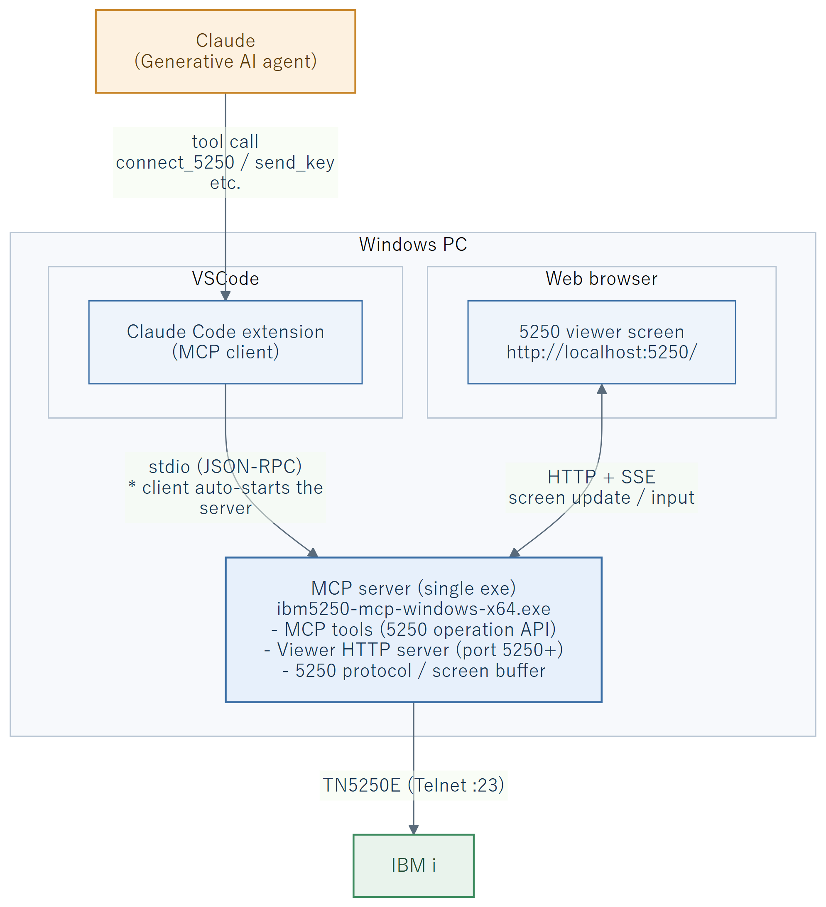
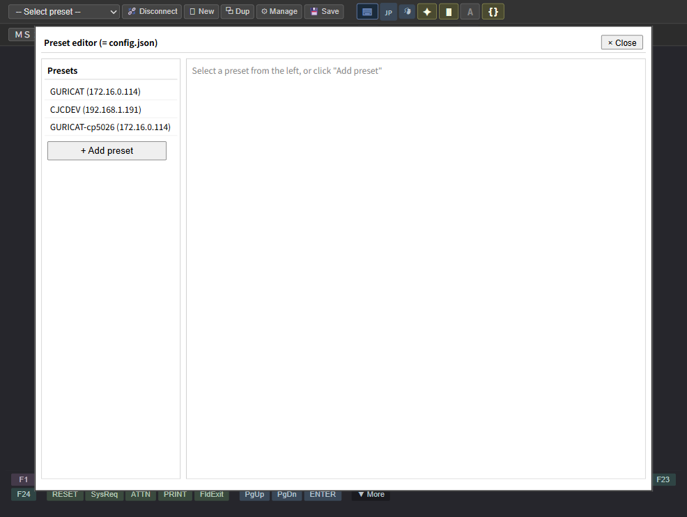

| Caution | The contents of this guide include operations that change the configuration and operation of this product. Incorrect settings may interrupt users' work, so make a backup (= keep a copy of config.json) before changing any settings. |
|---|---|
| Prohibited | Never share passwords or authentication credentials in plain text outside your organization. Use this product's password environment variable (pwd_env_var) feature. |
| Notice | This guide assumes the contents of the User Guide. Please refer to it together with this guide. |
| Chapter | Main Contents |
|---|---|
| Chapter 2 | Explains how to add, edit, and delete connection configurations, and the meaning of each setting. |
| Chapter 3 | Explains how to set defaults, such as toolbar default values and automatic execution after connection. |
| Chapter 4 | Explains how to write AUTOTYP scripts and how to use the recording feature. |
| Chapter 5 | A list of MCP tools that can be called from generative AI agents (such as Claude), with each tool's arguments, return values, and examples. |
| Chapter 6 | Explains how to check logs and how to troubleshoot. |
| Chapter 7 | Appendix (port assignments, config.json specification, and glossary). |
This product operates around an MCP server (= a single executable ibm5250-mcp-windows-x64.exe) that connects four parties: the generative AI agent (Claude), VSCode, the web browser, and IBM i. No Node.js installation is required to run it (the runtime is bundled). The relationship among these components is as follows.

ibm5250-mcp-windows-x64.exe) — The center of all of the above. It connects to IBM i via TN5250E, maintains the screen buffer, and provides it to both the MCP tools and the viewer.Layout of the main files (= directly under the folder where the exe resides, e.g. C:\ibm5250-mcp\):
ibm5250-mcp/
├─ ibm5250-mcp-windows-x64.exe ← the MCP server itself (single executable)
├─ config.json ← connection configurations and viewer defaults (Section 1.5)
├─ docs/manuals/ ← this manual (PDF)
└─ log/ ← session logs (output when log=true is specified at connection)config.json and logs relative to the folder where the exe resides.
Installing this product follows these steps: place the executable → register with the MCP client → create a connection configuration. Obtaining or building the source is not required.
| Item | Required Version / Notes |
|---|---|
| OS | Windows (x64). Verified on 10 / 11. |
| MCP client | Claude Code (VSCode extension) or similar that can start a stdio MCP server. |
| IBM i | Reachable over the TN5250E (Telnet) port (= default 23) |
| Web browser | For viewing the screen viewer (optional) |
Obtain ibm5250-mcp-windows-x64.exe from the distribution's Releases and place it in any folder (e.g., C:\ibm5250-mcp\). Put config.json (Section 1.5) in the same folder. The server reads and writes its configuration and logs relative to the folder where the exe resides, so you do not need to set a working directory on the MCP client side.
To use this product as an MCP server, register it in the configuration file of an MCP client such as Claude Code.
For Claude Code, add the following entry to the project directory's .mcp.json or to the user-wide MCP settings file.
{
"mcpServers": {
"ibm5250": {
"command": "C:\\ibm5250-mcp\\ibm5250-mcp-windows-x64.exe",
"env": {}
}
}
}| Key | Description |
|---|---|
command | Specify the absolute path to the placed ibm5250-mcp-windows-x64.exe. |
env | Specify environment variables (= password environment variable, etc.) as needed. |
.mcp.json, restart the MCP client (= Claude Code, etc.) to apply the settings.
On first use, config.json either does not exist or is empty. Create a connection configuration using one of the following methods.
http://localhost:5250/ in a web browser, then enter the items via "⚙ Manage Configurations" → "+ Add New" (see Chapter 2 for details).save_connection_preset You can register connection configurations in bulk by calling this tool from an AI agent (see Chapter 5 for details).config.json directly Write it manually following the format in Section 1.5 (be careful with JSON syntax).The basic behavior is that this product is started by the MCP client. When the "IBM i connection tool" is called on the client side, the MCP server process starts automatically (the stdio path in Figure 1.2-1).
Startup flow
.mcp.json, Section 1.3.3).connect_5250, etc.), the extension automatically starts ibm5250-mcp-windows-x64.exe over stdio.http://localhost:5250/ in a browser displays the 5250 screen.Shutdown flow
| Operation | Method and Effect |
|---|---|
| Disconnect only the 5250 session | Call the MCP tool disconnect_5250. The connection to IBM i is broken, but the MCP server process and the viewer HTTP server remain alive, and reconnection is possible. |
| Terminate the whole server (normal) | When you exit VSCode (Claude Code), the automatically started MCP server process is terminated together with it. |
| Force termination / orphan process cleanup | If it is unresponsive or to clean up orphan processes, end ibm5250-mcp-windows-x64.exe in Task Manager, or run taskkill /IM ibm5250-mcp-windows-x64.exe /F in PowerShell. |
| Manual startup (verification) | Running .\ibm5250-mcp-windows-x64.exe directly in PowerShell starts it standalone without going through an MCP client (it waits on stdio). To stop it, press Ctrl+C. |
SIGNOFF (or the menu sign-off) on the IBM i side before calling disconnect_5250. If you disconnect only at the TCP level, an interactive job (QPADEVxxxx) may remain on the IBM i side, consuming subsystem resources or causing a device name conflict on reconnection.
This product's configuration is recorded in the config.json file directly under the project directory (= the one created in Section 1.3.4). Connection configurations, toolbar default values, auto-run scripts, and the viewer HTTP port are all consolidated in this file.
{
"presets": {
"(connection configuration name)": {
"host": "(IBM i host name or IP)",
"port": 23,
"code_page": "cp5026_legacy",
"screen_size": "27x132",
"strpccmd_mode": "execute",
"pwd_env_var": "",
"autorun_autotyp": "",
"description": "(description of the connection configuration)"
}
},
"viewer_defaults": {
"input_highlight": true,
"cs_style": "Line",
"sbcs_cp": "1027",
"shift_visible": true
}
}viewer_defaults is placed outside the connection configurations (= at the top level). These are the default values for the viewer's four display toggles (input field highlight / column separators / SBCS code page / shift character display), and one set is saved for the entire viewer (= not per connection configuration). See Section 3.1 for details.
auto_open opens an independent window only when the default browser is Chrome / Edge. If another browser (e.g., Firefox) is the default, it opens a new tab instead of an independent window.Configure viewer behavior in the viewer section of config.json.
{
"viewer": {
"port_default": 5250, // starting viewer port (used in order from the first session)
"port_auto_assign": true, // if in use, +1 to find a free port
"auto_open": "browser-app" // "off" | "browser" | "browser-app" (default: browser-app)
}
}Multiple windows / sessions: Each connect_5250 assigns a free port starting from 5250 (5251, 5252, …) and opens an independent window per session. Ports are freed on disconnect or window close and reused from 5250 upward, so they are never exhausted in long runs. Port 5250 serves as the pre-connection form (launcher). The session ID is auto-generated in the form (host)-(telnet port)-mcp(viewer port) (e.g., 192.168.1.191-23-mcp5251) and cannot be specified explicitly.
Auto-open (auto_open): With browser / browser-app, each connection automatically opens that session's window in a browser (off opens nothing and only returns the URL). It launches the OS default browser directly, so no additional tools are needed. The environment variable SCREEN_VIEWER_AUTO_OPEN on the side that registers this MCP takes precedence over config.json. Behavior by default browser:
Behavior at startup: Windows open automatically only when connecting. As the sole exception, when the product is started directly (double-clicking the executable or launching it from a command line), the pre-connection form (launcher) opens automatically at startup. When started by an MCP client (such as Claude), nothing opens at startup (use the MCP tool open_viewer if you need the connection form).
| auto_open | Default browser | How it launches | Window shape |
|---|---|---|---|
off | — | does not open | — |
browser | Chrome | Chrome in a new window | independent normal window (tab / address bar / menu shown) |
browser | Edge | Edge in a new window | same |
browser | other (Firefox etc.) / not found | default browser (OS association) | new tab (not an independent window) |
browser-app (default) | Chrome | Chrome in app mode | independent chromeless window (no tab / address bar / menu) |
browser-app | Edge | Edge in app mode | same |
browser-app | other | whichever of Chrome→Edge is installed, in app mode | chromeless window |
browser-app | other + neither Chrome/Edge installed | default browser (OS association) | new tab (app mode N/A) |
Disconnect ⇄ window linkage (bidirectional): Running disconnect_5250 from the tool closes that session's window and frees the port. Conversely, when the user closes the browser window, the session is automatically disconnected after about 5 seconds (reloads and transient network drops are not misinterpreted). In ACS you normally close the window to end a session, but because this product leaves a local port open when the browser is closed, this bidirectional linkage provides a feel close to ACS.
The Help (ℹ) button on the second toolbar row of the viewer, or http://localhost:(port)/help, opens the online help (always in a normal window of the default browser). The first page shows the product version and build date, and links to the End-User License Agreement (EULA), the third-party notices, the User Guide, and this Admin Guide.
| Item | Description |
|---|---|
| Guide content source | The HTML guides and images under docs/manuals/ (bundled with the distribution). Identical in content to the PDF versions. |
| EULA / third-party notices | Rendered from EULA.md / THIRD-PARTY-NOTICES.md in the distribution root. |
| Build date | The modification time of the running program file. Use it to confirm which build is running when investigating problems. |
| Display language | Follows the viewer display language (Japanese / English; ?lang=ja / ?lang=en). |
Voice input via the microphone button in the viewer (User Guide, Section 5.5) is available only when you use this viewer together with the Claude extension (Claude Code) in Visual Studio Code. To pass what you say to Claude, you need to add one hook on the Claude side.
It works as follows. The voice captured by the microphone button in the viewer is sent to the MCP server's /api/voice endpoint and temporarily stored in tmp/pending-voice.txt. The hook below reads this file and injects the converted text (transcript) as input to Claude.
The speech recognition language follows the viewer's display language (Japanese / English): ja-JP for Japanese and en-US for English.
Add the following registration to hooks in Claude's settings file (.claude/settings.json).
{
"hooks": {
"SessionStart": [
{ "hooks": [{ "type": "command", "command": "node scripts/voice-hook.cjs" }] }
],
"Stop": [
{ "hooks": [{ "type": "command", "command": "node scripts/voice-hook.cjs" }] }
]
}
}command to match the location of voice-hook.cjs in your environment. If you do not add this hook, the voice captured by the microphone button is not passed to Claude.
Clicking "⚙ Manage Configurations" in the toolbar displays the configuration edit dialog.

| Item | Description |
|---|---|
| Configuration name | A unique name for the connection configuration. |
| IBM i host name or IP address | Specify the host name or IP address of the destination server. |
| Destination port | The TN5250E port. The default is 23 (Telnet). |
| Host code page | Choose from cp5026_legacy (= 290 host katakana, the default of IBM-supplied Japanese 5250 emulators and the most common in Japanese environments; lowercase letters are forced to uppercase and undefined codes are shown as ■), cp5026_current (= modern extended host katakana based on 290), cp1399 (= JIS2004 DBCS), cp5035 (= host Latin), cp037 (= alphanumeric only), and so on. |
| Screen size | Select 24x80 or 27x132. |
| PC command (STRPCCMD) handling | off (= ignore. Silently returns only an ack and suppresses the screen; for security purposes) / log (= detect and only output to the log without executing; for auditing) / execute (= actually execute, honoring the wait flag). The default is execute (= equivalent to ACS). In every mode, an ack is sent to the PCO to prevent IBM i from hanging. Because execute runs arbitrary OS commands, use it only with programs you trust. |
| Workstation ID | The device name passed to RFC 4777 USERVAR DEVNAME (see Section 2.2 for details). |
| Password environment variable (headless) | Specifying an environment variable name lets you skip password entry in headless operation (see Section 2.3 for details). |
| AUTOTYP to run after connection | Specify the name of an AUTOTYP script to run automatically immediately after connecting. When left blank, nothing is run automatically (e.g., automating sign-on). |
| Hide toolbar initially | When turned on, the toolbar is hidden at connection time and only the 5250 screen is displayed (the same state as the 🔧 button). To show it again, click the gray margin. |
| Display font | Specifies the display font, size, fixed size, bold, and italic of the 5250 screen. For Japanese (DBCS) sessions, a Japanese font is the default. Turning on fixed size adjusts the window size so that the 5250 screen fits. |
| Description | An arbitrary explanatory text representing the configuration contents (shown in the list screen). |
The workstation ID (= device name) follows the naming rules of ACS's "Workstation ID (5250 display/printer session)".
| Symbol | Meaning |
|---|---|
&COMPN | Expands to the computer name (the COMPUTERNAME environment variable). |
&USERN | Expands to the signed-on Windows user name. |
* | Expands to a sequential letter A–Z (state is kept per configuration). Useful for distinguishing multiple sessions. |
% | Expands to the fixed character S. |
= | Expands to one random alphanumeric character to avoid collisions. |
PC&COMPN* and the computer name is WS001, the first time produces PCWS001A, the second time produces PCWS001B, and so on.
&COMPN + the * sequence, but exhaustive testing of every symbol combination and special characters has not been performed. If you use complex device name rules, please verify the behavior with a small-scale test before putting it into operation.
The ^PWD line in an AUTOTYP script is replaced with the password at run time. The password is not saved in the configuration file (= for security, it is saved neither in plain text nor encrypted). The retrieval path automatically switches between the following two depending on the execution environment.
| Execution Environment | Where the Password Is Obtained |
|---|---|
| Viewer connected (= a session is open in the browser) | A password entry dialog is displayed, and the user enters it on the spot (= the primary path, with a 60-second timeout). In this case, the "password environment variable" is not referenced. |
| Headless (= viewer not connected, automatic connection / batch operation, etc.) | Uses the value of the Windows environment variable specified in the "password environment variable" field. |
If you want to connect automatically in headless operation without entering the password on the screen, store the password in a Windows environment variable and specify that variable name in the "password environment variable" field of the connection configuration.
PWD_ENV_MISSING / PWD_NO_SOURCE). This is because there is no browser to display a dialog in headless mode. On error, either open the viewer and enter it interactively, or set the environment variable before starting the server.
As one set of default values for the entire viewer, you can configure the four display toggles in the toolbar described in Section 5.4 of the User Guide (= not per connection configuration). They are recorded in the viewer_defaults block at the top level of config.json.
| Item | Key | Options |
|---|---|---|
| Input field highlight (default) | input_highlight | true (= ✦ on) / false (= ✦ off) |
| Column separators (default) | cs_style | "Line" (= ⦀) / "Dot" (= ┅) |
| SBCS code page (default) | sbcs_cp | "1027" (= A) / "290" (= ｱ) (DBCS only) |
| Shift character display (default) | shift_visible | true (= show { }) / false (= hidden, nothing displayed) (DBCS only) |
viewer_defaults. You can also edit config.json directly (= applied only at server startup).
If you specify an AUTOTYP script name (e.g., signon.autotyp) in the "AUTOTYP to run after connection" field of a connection configuration, that script runs automatically immediately after a successful connection.
AUTOTYP scripts are in plain-text format and are placed in scripts/*.autotyp. The basic structure is as follows.
^ATP
← Automatic sign-on execution
USER01 ← The first line is entered at the cursor position, then TAB
^PWD ← Replaced with the password (entry dialog when the viewer is connected, environment variable in headless mode)
^ENTER
^ENDStructure markers and comments
| Symbol at Line Start | Meaning |
|---|---|
^ATP | The script start marker. Always write it on the first line. |
^END | The script end marker. |
← | The comment symbol (a feature specific to this product). Characters after ← are ignored at run time. A ← line immediately after ^ATP is treated as the script description and is shown in the list. |
[label | Defines a jump target label. It becomes the destination for ^GO / ^DSP / ^INH. |
| Other text | Enters that text at the cursor position and buffers it in the current field. |
^PWD | Replaces with the password and enters it. When the viewer is connected, an entry dialog is displayed; in headless mode, the value of the "password environment variable" is used (= Section 2.3). |
AID keys (sends that involve a screen transition) — Send all fields in the buffer, then send the AID code.
| Command | Meaning |
|---|---|
^ENTER | The Enter key. |
^F1–^F24 (= ^CMD01–^CMD24) | Function keys F1–F24. ^F3 and ^CMD03 are synonymous. |
^HELP | Help (HELP AID). |
^ROLLDN / ^ROLLUP | Roll down (Page Up) / Roll up (Page Down). |
^PRINT | The Print key. |
^HOME | Record backspace (Home). |
^ATTN / ^SYSRQ / ^RESET | Attention / System Request / Reset. |
Field movement and editing (no AID sent)
| Command | Meaning |
|---|---|
^FLDEXIT / ^FLDEXIT+ / ^FLDEXIT- | Field Exit. Confirms the current field and moves to the next field. In numeric fields it specifies the sign — ^FLDEXIT and ^FLDEXIT+ are positive, and ^FLDEXIT- is negative (= for a signed numeric field, - is placed at the trailing sign position; for a numeric-only field, the zone of the last digit is set negative). ^FLDEXIT- is invalid for non-numeric fields (= only a warning is logged, with normal movement). The - does not mean "previous field" (use ^BTAB to go back). |
^FTAB / ^BTAB | Tab (next field) / Back Tab (previous field). |
^ERASEEOF | Erases from the cursor position to the end of the current field. |
^ERASEINPUT | Clears all modified input fields and returns the cursor to the first input field. |
^DUP | Fills with the DUP character from the cursor position to the end and moves to the next field. |
^DEL / ^INSERT | Toggle delete / insert mode. |
^CSRUP / ^CSRDN / ^CSRLFT / ^CSRRGT | Moves the cursor up / down / left / right. |
Control and flow
| Command | Meaning |
|---|---|
^WAITX nn | Waits nn × 500 milliseconds (e.g., ^WAITX 4 = 2000ms). |
^DSPxxyyystring [label | Compares the on-screen string at row xx (2 digits) and column yyy (3 digits), and if it matches, jumps to label. |
^GO [label | Jumps unconditionally to label. |
^INHON / ^INHOFF | Enables / disables input-inhibited (keyboard lock) detection (default: disabled). A jump by ^INH works only after ^INHON has been executed. |
^INH [label | In the ^INHON state, if input is inhibited, jumps to label. |
^ERMON / ^ERMOFF | Enables / disables error reset mode. |
^CSRON / ^CSROFF | Enables / disables cursor control mode. |
^ATP marker was not found, 20 = the jump target label is undefined, 21/22 = the row / column number of ^DSP is invalid). For the full list of codes, see the AUTOTYP specification in docs/feature-specs.md.
.autotyp extension), we recommend using ASCII alphanumerics and a few symbols (-_.). Japanese file names can be handled by the OS, but for compatibility with AUTOTYP command-line arguments and operations, we recommend naming with alphanumerics.
In 5250, while the host has the keyboard locked (= the input-inhibited indicator is lit, the so-called X SYSTEM state), some operations are accepted and others are ignored, depending on the type of operation (5494 specification Sections 16.1.2 / 16.2.1). AUTOTYP commands follow the same distinction.
| Category | Applicable Commands | Behavior While Input Is Inhibited |
|---|---|---|
| Reaches the host even while locked | ^SYSRQ / ^ATTN / ^PRINT / ^RESET | System Request, Attention, Print (cancel), and Error Reset are sent to the host even when the keyboard is locked (= signals / special keys that do not require the lock to be released). |
| Waits for the lock to be released | ^ENTER / ^F1–^F24 (^CMDnn) / data input lines / the ^FLDEXIT family / ^FTAB / ^BTAB / ^DUP / the ^ERASEEOF family | These AID keys, inputs, and edits are invalid while locked. AUTOTYP waits up to 30 seconds for the lock to be released before sending the AID (only ^PRINT is sent without waiting). On timeout, it ends with error code 24. |
^INHON + ^INH [label, or enable send retries with ^ERMON. Because the default of ^INHON is disabled, you must execute ^INHON before using ^INH.
With the toolbar's ● Rec button, you can automatically generate an AUTOTYP script directly from your screen operations.
Click ● Rec. The button turns red.
Perform the operations you want to keep as AUTOTYP, such as key input, function keys, and pasting.
Click ● Rec again, and the edit dialog opens. Enter a file name and save.
HAScript XML macros (.mac) created for IBM HOD (Host on-Demand) or HCL ZIE can be converted to AUTOTYP format using this product's MCP tool convert_macro. See the MCP tool list in Chapter 5 for details.
This product also operates as a Model Context Protocol (MCP) server. From generative AI agents such as Claude, you can call the following tools to operate the 5250 screen.
| Tool Name | Description |
|---|---|
connect_5250 | Connects to IBM i. You can specify a connection configuration by preset name. |
disconnect_5250 | Disconnects the session. |
list_sessions | Returns a list of the currently active sessions. |
list_connection_presets | Returns a list of the connection configurations registered in config.json. |
save_connection_preset | Adds or updates a connection configuration. |
open_viewer | Opens the viewer in a browser window. Without session_id, it opens the unconnected connection form (launcher); with session_id, it reopens that session's window (recovery after closing the window by mistake). Without mode (browser / browser-app), it follows auto_open in config.json. |
| Tool Name | Description |
|---|---|
get_screen | Gets the current screen. You can choose text format or json format (structured data). |
get_field_text | Gets the field value at the specified position. |
send_key | Sends an AID key or an edit key. |
send_text | Enters text at the specified position and sends an AID key. |
paste_text | Pastes multi-line text (moves between fields according to Tab and line breaks). |
| Tool Name | Description |
|---|---|
run_autotyp | Runs an AUTOTYP script (text or file). The step_delay argument lets you specify the wait in milliseconds after each AID key send (= step execution for visual confirmation). |
list_autotyp_scripts | Returns the list of AUTOTYP scripts under scripts/ and their descriptions. |
run_macro | Runs a HAScript XML macro. |
convert_macro | Converts HAScript XML to AUTOTYP format. |
| Tool Name | Description |
|---|---|
get_session_log | Gets the session log (in memory / file). |
For representative tools, the arguments, main return values, and call examples (JSON) are shown. The session_id obtained from the first connect_5250 is specified in all subsequent tools. Coordinates (row / col) are 1-based.
| Argument | Required | Description |
|---|---|---|
preset | The connection configuration name in config.json. Loads host / port / code_page / screen_size, etc. (can be overridden by individual arguments) | |
host | △ | Host name or IP address (required when not using a preset) |
port | Port number (default 23) | |
code_page | cp037 / cp500 / cp1148 / cp1399 / cp5035 / cp5026_current / cp5026_legacy | |
screen_size | 24x80 (default) / 27x132 | |
session_id | Session identifier (auto-generated when omitted) | |
strpccmd_mode | off (ignore) / log (record only) / execute (run, default). Handling of PC command requests (STRPCCMD) from a PGM | |
allow_ds4 | Whether to permit switching to 27x132 (DS4) (default true). false fixes it to 24x80 | |
log | Whether to save the session log to a file (default false = memory only) | |
log_file | Path of the log file (auto-generated in log/ when omitted, valid only when log=true) | |
device_name | Device name (RFC 4777 DEVNAME, uppercase letters + digits, max 10. Auto-named QPADEVnnnn when omitted) |
Return value: { success, session_id, host, port, code_page, screen_size, terminal_type }
{ "preset": "<connection configuration name>", "session_id": "s1" }| Argument | Required | Description |
|---|---|---|
session_id | ○ | Session identifier |
format | text (default, screen string) / json (structured data) |
Return value (json): rows / cols / cursor {row, col} / text / fields[] (each field's row / col / length / protected / numeric / modified, etc.) / inputReady (false = X II input lock). The text format returns only the screen string.
{ "session_id": "s1", "format": "json" }| Argument | Required | Description |
|---|---|---|
session_id | ○ | Session identifier |
key | ○ | AID key (ENTER / F1–F24 / CLEAR / HELP / PRINT / PA1–PA3 / ROLLUP / ROLLDN, etc.), navigation key (TAB / BTAB / UP / DOWN / LEFT / RIGHT / HOME), edit key (ERASE_EOF / ERASE_INPUT / FIELD_EXIT / FIELD_EXIT_PLUS / FIELD_EXIT_MINUS / DEL / DUP / INSERT) |
data | Data to enter before sending the key (optional) |
{ "session_id": "s1", "key": "F3" }| Argument | Required | Description |
|---|---|---|
session_id | ○ | Session identifier |
text | ○ | The string to enter |
row / col | Input start position (1-based). Uses the current cursor position when omitted | |
key | The AID key to send after input (default ENTER) | |
overflow | With true, sends the part exceeding the field to the field on the line below (default false = the excess is truncated and reported) |
Return value: truncated (whether truncation occurred) / accepted_chars (number of accepted characters) / dropped_chars (number of truncated characters). Input that does not match the field type returns DBCS_FIELD_TYPE_VIOLATION, and when no target field is found it returns NO_TARGET_FIELD and does not send the AID.
{ "session_id": "s1", "text": "DSPLIBL", "key": "ENTER" }| Argument | Required | Description |
|---|---|---|
session_id | ○ | Session identifier |
script / script_file | ○ | Either the AUTOTYP script body (script) or a file path under scripts/ (script_file) (mutually exclusive) |
max_commands | Maximum number of commands to execute (default 1000) | |
timeout | Overall timeout (milliseconds, default 60000) | |
step_delay | Wait in milliseconds after each AID key send (default 0, step execution for visual confirmation) |
Return value: success / error_code (see the error code table in Section 4.2) / error_message
{ "session_id": "s1", "script_file": "scripts/signon.autotyp" }| Argument | Required | Description |
|---|---|---|
session_id | ○ | Session identifier |
text | ○ | The string to paste. When it contains line breaks (\n), it advances to the next field (block copy) |
is_block_copy | Whether to treat line breaks as crossing fields (true, default) or as plain continuous text (false) | |
key | The AID key to send after pasting. When omitted, only pastes without sending an AID |
Return value: truncated / dropped_chars (the part exceeding the field capacity)
| Argument | Required | Description |
|---|---|---|
session_id | ○ | Session identifier |
row / col | ○ | Retrieval start position (1-based, data position = field.col + 1) |
length | ○ | Number of characters to retrieve |
Return value: The string in the specified range
| Argument | Required | Description |
|---|---|---|
session_id | ○ | Session identifier |
Return value: { success, session_id, message }. Perform SIGNOFF on the IBM i side before disconnecting (Section 1.4).
| Argument | Required | Description |
|---|---|---|
session_id | ○ | Session identifier |
tail | Number of entries to retrieve from the end (all entries when omitted) |
Return value: An array of log entries (chronological. For the recorded contents, see Section 6.1)
No arguments. Return value: An array of active sessions (each with id / host / port / codePage / terminalType / connected).
No arguments. Return value: An array of the connection configurations in config.json (each with name / host / port / code_page / screen_size / description, etc. Referenced by the preset of connect_5250).
No arguments. Return value: { count, scripts: [ { name, description, path } ] } (the *.autotyp under scripts/. The description is extracted from the ← line immediately after ^ATP).
| Argument | Required | Description |
|---|---|---|
name | ○ | Connection configuration name (unique identifier) |
host | ○ | Host name / IP address |
port | Port number (default 23) | |
code_page | cp037 / cp500 / cp1148 / cp1399 / cp5035 / cp5026_current / cp5026_legacy | |
screen_size | 24x80 (default) / 27x132 | |
strpccmd_mode | off / log / execute (default) | |
device_name | Device name (optional) | |
pwd_env_var | The environment variable name referenced by ^PWD (used when the viewer is not connected / headless) | |
autorun_autotyp | The name of the AUTOTYP script to run automatically immediately after a successful connection | |
allow_ds4 | Whether to permit switching to 27x132 (DS4) (default true) | |
description | Description of the configuration (optional) |
Return value: { success }. The password is not saved (^PWD is obtained from pwd_env_var or the viewer modal).
| Argument | Required | Description |
|---|---|---|
session_id | ○ | Session identifier |
macro_xml / macro_file | ○ | Either a HAScript XML string (macro_xml) or a file path (macro_file) (mutually exclusive) |
variables | Macro variables ({ "userid": "...", ... }. Prompt values, etc.) | |
max_screens | Maximum number of screens to process (default 50) |
Return value: The macro execution result (success/failure, number of screens processed, etc.)
| Argument | Required | Description |
|---|---|---|
direction | ○ | hascript-to-autotyp (HAScript XML → AUTOTYP) / autotyp-to-hascript (AUTOTYP → HAScript JSON) |
input | ○ | The input string (HAScript XML or AUTOTYP text, depending on direction) |
Return value: The converted text / structure
row / col of fields[] indicate the position of the attribute byte. The data start position is col + 1. The row / col of send_text / get_field_text specify the data start position (1-based).
If you specify log=true at connection time, the session log is recorded to a file (when omitted, it is in memory only and can be retrieved with get_session_log). The default file path is as follows.
log/session ID_YYYYMMDD-HHMMSS.logThe log is chronological text, with each line in the format [time] type: content. The main types recorded are as follows.
| Type | Recorded Content |
|---|---|
| Connect / Disconnect | The destination host, port, code page, terminal type, device name, and the trigger for disconnection. |
| Sent byte stream (SEND) | A summary of the 5250 data stream sent to IBM i (AID code, SBA address, field content in hex, etc.). |
| Received byte stream (RECV) | A summary of the commands received from IBM i (Write to Display / Clear Unit / Write Structured Field, etc.) and control characters. |
| AID key | The type of AID key sent (ENTER / F1–F24 / CLEAR, etc.). |
| AUTOTYP | The start (AUTOTYP_START) / end (AUTOTYP_END) of script execution, and the execution steps of each line's command, input data, waits, and conditional branches. |
| Input state / Error | The occurrence and release of the keyboard lock (X II / X SYSTEM), input-inhibited wait timeouts, field validation errors, and protocol exceptions. |
| STRPCCMD | When strpccmd_mode is log / execute, the content of the PC command requested from the PGM and its handling (detected / executed). |
log=true), you can retrieve the in-memory log at any time with the get_session_log tool. If you need a detailed hex dump of the byte stream, start the server with the DEBUG_5250 environment variable.
| Symptom | Points to Check |
|---|---|
| Cannot connect |
|
| AUTOTYP fails | It may be timing out while waiting for the server response. Insert wait time with ^WAITX, or run run_autotyp after waiting sufficiently rather than immediately after connecting. |
| Garbled characters | Check the code_page setting. The most common in a Japanese environment is cp5026_legacy (= 290 host katakana, the default of IBM-supplied Japanese 5250 emulators; lowercase letters are forced to uppercase). The modern extended host katakana variant is cp5026_current, and in DBCS environments choose cp1399 (= JIS2004 DBCS). |
@playwright/mcpThe word "Playwright" covers two distinct usage models; it is important to tell them apart.
| Item | Playwright library (direct use) | @playwright/mcp (via MCP) |
|---|---|---|
| Role | API set called directly from Node.js / Python code (chromium.launch(), etc.) |
MCP server that uses Playwright internally. Claude calls MCP tools such as browser_navigate |
| Controlled instance | All browser instances the code launched | One Chrome instance auto-created at startup only |
| App mode ( --app=...) |
◯ Possible with chromium.launch({ args: ['--app=...'] }) |
× No equivalent launch option exposed by the public tools |
In this product's Claude integration, @playwright/mcp is used. All browser_navigate / browser_take_screenshot calls that Claude makes go through this MCP server.
A window opened in app mode (chrome.exe --app=http://localhost:5250/... launched from Bash / PowerShell) is outside Playwright's CDP control. That means Playwright cannot take screenshots of or operate that same window.
| How launched | App mode (no address bar) |
Playwright control (screenshot / operation) |
|---|---|---|
chrome.exe --app=... via Bash |
◯ | × (no CDP connection) |
browser_navigate (@playwright/mcp) |
× (address bar visible) | ◯ |
To capture screenshots, a window opened through @playwright/mcp is required. The typical setup is a two-window configuration: the administrator views the app-mode window, while Claude takes screenshots in a separate Playwright window.
toolbar_hidden)To capture only the 5250 terminal screen (no toolbars) as a screenshot for manuals or tests, follow these steps.
config.json that has "toolbar_hidden": true (see section 2.1 for how to configure).connect_5250 using that preset and obtain the session ID.browser_navigate in Playwright MCP to open http://localhost:5250/?session=<session ID>.browser_take_screenshot. Because toolbar_hidden: true hides all toolbars via CSS, the 5250 terminal canvas fills the entire viewport in the captured image.toolbar_hidden: true worksGET /api/viewer-defaults and applies document.body.classList.add('tb-collapsed'). CSS hides all toolbars (connection form / keyboard / phase bar), and body { height: 100vh; display: flex; flex-direction: column; } makes the 5250 canvas fill the viewport. Because the address bar is outside the viewport, the output of browser_take_screenshot contains only the 5250 screen.
Playwright is a tool for automating a web browser. A generative AI agent (= Claude, etc.) can observe this product's viewer screen (= getting the screen, taking screenshots, inspecting elements) through Playwright MCP. Recommendation: limit Playwright to launching the browser and observation (browser_navigate / browser_snapshot / browser_take_screenshot, etc.), and send keystrokes and AID to the 5250 via this product's MCP tools (send_key / send_text / run_autotyp / paste_text) or by a user's own keyboard input in the viewer. Viewer keystrokes are sent to the server asynchronously, but input originating in the viewer is sent in a guaranteed order; the MCP AID send does not go through that input serialization. So mixing Playwright keystrokes with an MCP AID send (= ENTER / function keys and other screen-submit keys) simultaneously and at high volume / high speed can reorder the two, and a keystroke may be dropped before the AID is sent. This does not forbid using Playwright's keystroke functions as such; the problem only arises when they are mixed with the MCP AID simultaneously and at high volume / high speed. Routing all keystrokes through a user's keyboard input and the MCP tools avoids the ordering problem and keeps automation reproducible. Please also check the following constraints and responses.
The table below places the three parties that operate or observe the viewer (= this product's MCP tools / Playwright / a user's normal browser) side by side and compares them by purpose / function (◯ = available, △ = only indirectly / partially, × = not available; caveats such as conflicts are noted in the cell).
| Purpose / function | This product's MCP tools | Playwright (dedicated Chromium) |
User's normal browser (manual) |
|---|---|---|---|
| Primary use | The backbone for all input, logical-screen retrieval, and automation | Visual / DOM observation only (when done automatically by the AI) | Everyday interactive operation and final visual check |
| Keystroke / AID input | ◯ sent at the protocol layer (send_key / send_text) |
◯ possible via browser_type etc. (note: conflicts with the MCP AID when mixed simultaneously / at high volume / fast — route input through MCP) |
◯ typed directly by the user on the keyboard |
| Multi-line paste | ◯ pasted in one go with paste_text |
◯ text can be entered via browser_type (note: same conflict when concurrent / fast) |
◯ pasted with Ctrl+V |
| Deterministic script execution (AUTOTYP / macro) | ◯ run with run_autotyp / run_macro |
× no means to run | × no means to run (manual operation only) |
| Mouse operation / text selection | × has no mouse (keys / AID only) | ◯ DOM operations via browser_click / browser_drag |
◯ operated with the mouse by the user |
| Logical screen retrieval (text / attributes) | ◯ retrieves text / color / attributes with get_screen |
△ indirectly from the DOM text (no dedicated API) | △ read by eye / via DevTools |
| Screenshot (rendered image) / appearance check | △ a text form of the screen is available via get_screen; a rendered pixel image is not |
◯ captures the rendering as an image with browser_take_screenshot |
◯ by eye / OS screenshot |
| DOM / CSS / layout inspection | × no access to the live DOM | ◯ inspects DOM / computed styles with browser_evaluate |
◯ inspected via DevTools (F12) |
| Browser console / network inspection (DevTools: JS console output / traffic log) |
△ only requests received by the server (get_session_log); the browser's console / network log is not visible |
◯ via browser_console_messages / network retrieval |
◯ via the Console / Network tabs of DevTools (F12) |
| Connection management (connect / disconnect) | ◯ managed with connect_5250 / disconnect_5250 |
△ no dedicated API, but possible by clicking the on-screen connect / disconnect button via browser_click |
◯ via the viewer's connect form / preset selection and the disconnect toggle button |
send_key / send_text / run_autotyp / paste_text) or the user's keyboard, and use Playwright for observation (browser_navigate / browser_snapshot / browser_take_screenshot / browser_evaluate). Playwright's keystroke functions (browser_type etc.) are not forbidden as such, but mixing them with the MCP AID simultaneously at high volume / high speed can drop or reorder input. For the mechanism and what each party can do, see the introduction to this section and the comparison table above.
browser_resize in Playwrightbrowser_resize (= page.setViewportSize) releases the automatic following between the viewer's window frame and the viewport, and subsequent resize operations no longer affect the viewer.contextOptions.viewport: null in %USERPROFILE%\.claude\playwright-mcp-config.json. In tests via Playwright, use only observational operations such as browser_navigate.
| Phenomenon | Cause | Response |
|---|---|---|
| Manually resizing the viewer window does not change the screen size | Playwright (= the AI agent) called browser_resize just before, switching the viewport to a fixed state |
|
| The AI agent states things like "Playwright resize does not work" or "the viewport is fixed" | The AI agent is trying to use / has used the browser_resize tool |
Stop the agent from using that tool, and recover using steps 1–3 above. This phenomenon is known as a structural recurring pattern on the AI agent side (= see docs/postmortems.md and the rule 22 sub-bullet in CLAUDE.md for details). |
| Port | Use |
|---|---|
| 23 | Telnet on the IBM i side (= destination) |
| 5250 (= default) | The web viewer HTTP port of this product |
| 5251, 5252, ... | Automatically falls back to a free port if 5250 is in use |
| Key | Description |
|---|---|
host | The destination host name or IP address |
port | The destination Telnet port (default 23) |
code_page | The host code page |
dbcs_unicode_mapping | Unicode mapping of the cp1399 DBCS symbols. "ms" (default) = MS-compatible (fullwidth, avoids half-width rendering); "unicode_standard" = IBM / Unicode standard. Effective only for cp1399; cp5035 / cp5026 are fixed to the MS mapping and ignore this setting. The five symbols are X'4260' (－/−), X'426A' (￤/¦), X'43A1' (～/〜), X'444A' (―/—), and X'447C' (∥/‖). |
screen_size | "24x80" or "27x132" |
strpccmd_mode | "off" / "log" / "execute" |
device_name | The workstation ID (= device name, wildcards allowed) |
pwd_env_var | The name of the environment variable storing the password |
autorun_autotyp | The name of the script to run automatically after connection |
session_counter | The counter for the "*" wildcard of device_name (managed internally) |
description | The description of the configuration |
The following items are written at the top level of config.json (= outside "presets").
| Key | Description |
|---|---|
viewer_defaults | The default values for the viewer's four display toggles (= one set for the entire viewer, see Section 3.1). Subkeys: input_highlight (= input field highlight, true/false), cs_style (= column separators, "Line"/"Dot"), sbcs_cp (= SBCS code page, "1027"/"290"), shift_visible (= shift character display, true/false). |
autoconnect_preset | Specifies the name of the connection configuration to connect to automatically when the MCP server starts (no automatic connection when empty). Immediately after server startup completes, it internally calls connect_5250 preset=<name>, and the established session ID is notified to the viewer via /api/autoconnect-session. If the URL has no ?session= parameter, the viewer automatically connects to that session. |
The same specification is also possible via the environment variable IBM5250_AUTOCONNECT_PRESET or the startup CLI argument --autoconnect-preset=<name> (priority: CLI argument > environment variable > config.json).
| Term | Description |
|---|---|
| 5250 | The screen terminal protocol of IBM i (AS/400). The target this product emulates. |
| MCP (Model Context Protocol) | The standard by which generative AI agents call tools. This product provides 5250 operation tools as an MCP server. |
| AID key | Attention Identification. Keys that send the screen to IBM i, such as ENTER / F1–F24 / CLEAR. |
| OIA | Operator Information Area. The status display line at the bottom of the screen (input state, cursor position, communication status, etc.). |
| X II / X SYSTEM | A state where the keyboard is locked and input is not possible (Input Inhibited). Release it with RESET. |
| Field | An input / display area on the screen. Defined in DDS, with attributes such as protected / unprotected, numeric, and DBCS. |
| DDS | Data Description Specifications. The description that defines display device files (screens) on IBM i. |
| FFW / FCW | Field Format Word / Field Control Word. The protocol-level bits representing a field's attributes (numeric, mandatory, uppercase conversion, DBCS type, etc.). |
| SBCS / DBCS | Single-Byte / Double-Byte Character Set. Alphanumerics and katakana are SBCS, while kanji and kana are DBCS (2 bytes). |
| SO / SI | Shift-Out / Shift-In. The shift characters indicating the start / end of a DBCS region. They can be replaced with { } in the display. |
| CNTFLD | Continued entry field. A single logical field spanning multiple lines. |
| EBCDIC | The character code system of IBM i / mainframes. Converted to and from Unicode via code pages. |
| Code page | The conversion table between EBCDIC and Unicode (cp037 / cp1399 / cp5026_current, etc.). |
| DS3 / DS4 | Screen size. DS3 = 24×80, DS4 = 27×132. |
| AUTOTYP | This product's text-based automatic input script (Chapter 4). |
| HAScript | The macro XML format of HCL ZIEWeb / IBM HOD. Supported by run_macro / convert_macro. |
| STRPCCMD | A mechanism by which an IBM i program requests the execution of a command on the PC side. Its handling is controlled by strpccmd_mode. |
| ^PWD | The AUTOTYP password substitution command. Obtained from an environment variable or the viewer modal (Section 2.3). |
| Connection configuration (preset) | A set of connection parameters saved in config.json. Referenced by the preset of connect_5250. |
| SIGNOFF | IBM i sign-off. Perform it before disconnecting to prevent orphaning of the interactive job (QPADEVxxxx) (Section 1.4). |
Correspondence tables for the main SBCS (single-byte) EBCDIC code pages handled by this product. In each table the high 4 bits (column, hex) × low 4 bits (row, hex) intersect to give the character for that byte (e.g., column 4 / row A = 0x4A). Bytes 0x00–0x3F are control codes and are omitted. A blank cell is the space character or an undefined code point (no character assigned, per the IBM / ICU definition); ▒ marks a non-convertible code shown as ■ on legacy displays in CP290 (non-extended). The layout follows reference/cp290_old.pdf (the IBM katakana character set and its code table).
| lo＼hi | 4 | 5 | 6 | 7 | 8 | 9 | A | B | C | D | E | F |
|---|---|---|---|---|---|---|---|---|---|---|---|---|
| 0 | & | - | ｿ | ▒ | ▒ | { | } | $ | 0 | |||
| 1 | ｡ | ｪ | / | ｱ | ﾀ | ‾ | A | J | 1 | |||
| 2 | ｢ | ｫ | ｲ | ﾁ | ﾍ | B | K | S | 2 | |||
| 3 | ｣ | ｬ | ｳ | ﾂ | ﾎ | C | L | T | 3 | |||
| 4 | ､ | ｭ | ｴ | ﾃ | ﾏ | D | M | U | 4 | |||
| 5 | ･ | ｮ | ｵ | ﾄ | ﾐ | E | N | V | 5 | |||
| 6 | ｦ | ｯ | ｶ | ﾅ | ﾑ | F | O | W | 6 | |||
| 7 | ｧ | ｷ | ﾆ | ﾒ | G | P | X | 7 | ||||
| 8 | ｨ | ｰ | ｸ | ﾇ | ﾓ | H | Q | Y | 8 | |||
| 9 | ｩ | ▒ | ｹ | ﾈ | ﾔ | I | R | Z | 9 | |||
| A | £ | ! | ▒ | : | ｺ | ﾉ | ﾕ | ﾚ | ||||
| B | . | ¥ | , | # | ﾛ | |||||||
| C | < | * | % | @ | ｻ | ﾖ | ﾜ | |||||
| D | ( | ) | _ | ' | ｼ | ﾊ | ﾗ | ﾝ | ||||
| E | + | ; | > | = | ｽ | ﾋ | ﾘ | ﾞ | ||||
| F | | | ¬ | " | ｾ | ﾌ | ﾙ | ﾟ |
The character set of the IBM 5250PC era (circa 1984). It has no lowercase letters; on input they are forced to uppercase. ▒ = undefined / non-convertible code.
| lo＼hi | 4 | 5 | 6 | 7 | 8 | 9 | A | B | C | D | E | F |
|---|---|---|---|---|---|---|---|---|---|---|---|---|
| 0 | & | - | [ | ] | ｿ | ~ | ^ | { | } | $ | 0 | |
| 1 | ｡ | ｪ | / | i | ｱ | ﾀ | ‾ | ¢ | A | J | 1 | |
| 2 | ｢ | ｫ | a | j | ｲ | ﾁ | ﾍ | \ | B | K | S | 2 |
| 3 | ｣ | ｬ | b | k | ｳ | ﾂ | ﾎ | t | C | L | T | 3 |
| 4 | ､ | ｭ | c | l | ｴ | ﾃ | ﾏ | u | D | M | U | 4 |
| 5 | ･ | ｮ | d | m | ｵ | ﾄ | ﾐ | v | E | N | V | 5 |
| 6 | ｦ | ｯ | e | n | ｶ | ﾅ | ﾑ | w | F | O | W | 6 |
| 7 | ｧ | ｰ | f | o | ｷ | ﾆ | ﾒ | x | G | P | X | 7 |
| 8 | ｨ | ｰ | g | p | ｸ | ﾇ | ﾓ | y | H | Q | Y | 8 |
| 9 | ｩ | ! | h | ` | ｹ | ﾈ | ﾔ | z | I | R | Z | 9 |
| A | £ | ! | i | : | ｺ | ﾉ | ﾕ | ﾚ | ||||
| B | . | ¥ | , | # | q | r | s | ﾛ | ||||
| C | < | * | % | @ | ｻ | ﾊ | ﾖ | ﾜ | ||||
| D | ( | ) | _ | ' | ｼ | ﾊ | ﾗ | ﾝ | ||||
| E | + | ; | > | = | ｽ | ﾋ | ﾘ | ﾞ | ||||
| F | | | ¬ | " | ｾ | ﾌ | ﾙ | ﾟ |
The extended 290. Adds lowercase letters and some symbols.
| lo＼hi | 4 | 5 | 6 | 7 | 8 | 9 | A | B | C | D | E | F |
|---|---|---|---|---|---|---|---|---|---|---|---|---|
| 0 | & | - | ｺ | ‾ | ^ | { | } | \ | 0 | |||
| 1 | ｩ | / | ｻ | a | j | ~ | £ | A | J | € | 1 | |
| 2 | ｡ | ｪ | ｲ | ｼ | b | k | s | ¥ | B | K | S | 2 |
| 3 | ｢ | ｫ | ｳ | ｽ | c | l | t | ﾔ | C | L | T | 3 |
| 4 | ｣ | ｬ | ｴ | ｾ | d | m | u | ﾕ | D | M | U | 4 |
| 5 | ､ | ｭ | ｵ | ｿ | e | n | v | ﾖ | E | N | V | 5 |
| 6 | ･ | ｮ | ｶ | ﾀ | f | o | w | ﾗ | F | O | W | 6 |
| 7 | ｦ | ｯ | ｷ | ﾁ | g | p | x | ﾘ | G | P | X | 7 |
| 8 | ｧ | ｰ | ｸ | ﾂ | h | q | y | ﾙ | H | Q | Y | 8 |
| 9 | ｨ | ｱ | ｹ | ` | i | r | z | ﾚ | I | R | Z | 9 |
| A | ¢ | ! | : | ﾃ | ﾉ | ﾏ | ﾛ | |||||
| B | . | $ | , | # | ﾄ | ﾊ | ﾐ | ﾜ | ||||
| C | < | * | % | @ | ﾅ | ﾋ | ﾑ | ﾝ | ||||
| D | ( | ) | _ | ' | ﾆ | ﾌ | [ | ] | ||||
| E | + | ; | > | = | ﾇ | ﾍ | ﾒ | ﾞ | ||||
| F | | | ¬ | " | ﾈ | ﾎ | ﾓ | ﾟ |
The SBCS component of cp1399 / cp5035. Blank cells are code points with no character assigned.
Note: strictly this table is not CP1027 itself but the CCSID 5123 (the Euro extension of CP1027) used by this product; since CP5123 is not well known it is shown under the common CP1027 name. The only difference is 0xE1 — ÷ (U+00F7) in CP1027 vs € (U+20AC) in CP5123. This table follows CP5123, so 0xE1 = €. Reference: ICU ibm-5123_P100-1999.ucm
| lo＼hi | 4 | 5 | 6 | 7 | 8 | 9 | A | B | C | D | E | F |
|---|---|---|---|---|---|---|---|---|---|---|---|---|
| 0 | & | - | ø | Ø | ° | µ | ^ | { | } | \ | 0 | |
| 1 | é | / | É | a | j | ~ | £ | A | J | ÷ | 1 | |
| 2 | â | ê | Â | Ê | b | k | s | ¥ | B | K | S | 2 |
| 3 | ä | ë | Ä | Ë | c | l | t | · | C | L | T | 3 |
| 4 | à | è | À | È | d | m | u | © | D | M | U | 4 |
| 5 | á | í | Á | Í | e | n | v | § | E | N | V | 5 |
| 6 | ã | î | Ã | Î | f | o | w | ¶ | F | O | W | 6 |
| 7 | å | ï | Å | Ï | g | p | x | ¼ | G | P | X | 7 |
| 8 | ç | ì | Ç | Ì | h | q | y | ½ | H | Q | Y | 8 |
| 9 | ñ | ß | Ñ | ` | i | r | z | ¾ | I | R | Z | 9 |
| A | ¢ | ! | ¦ | : | « | ª | ¡ | [ | | ¹ | ² | ³ |
| B | . | $ | , | # | » | º | ¿ | ] | ô | û | Ô | Û |
| C | < | * | % | @ | ð | æ | Ð | ¯ | ö | ü | Ö | Ü |
| D | ( | ) | _ | ' | ý | ¸ | Ý | ¨ | ò | ù | Ò | Ù |
| E | + | ; | > | = | þ | Æ | Þ | ´ | ó | ú | Ó | Ú |
| F | | | ¬ | " | ± | ¤ | ® | × | õ | ÿ | Õ |
EBCDIC for the US and Canada.
| lo＼hi | 4 | 5 | 6 | 7 | 8 | 9 | A | B | C | D | E | F |
|---|---|---|---|---|---|---|---|---|---|---|---|---|
| 0 | & | - | ø | Ø | ° | µ | ¢ | { | } | \ | 0 | |
| 1 | é | / | É | a | j | ~ | £ | A | J | ÷ | 1 | |
| 2 | â | ê | Â | Ê | b | k | s | ¥ | B | K | S | 2 |
| 3 | ä | ë | Ä | Ë | c | l | t | · | C | L | T | 3 |
| 4 | à | è | À | È | d | m | u | © | D | M | U | 4 |
| 5 | á | í | Á | Í | e | n | v | § | E | N | V | 5 |
| 6 | ã | î | Ã | Î | f | o | w | ¶ | F | O | W | 6 |
| 7 | å | ï | Å | Ï | g | p | x | ¼ | G | P | X | 7 |
| 8 | ç | ì | Ç | Ì | h | q | y | ½ | H | Q | Y | 8 |
| 9 | ñ | ß | Ñ | ` | i | r | z | ¾ | I | R | Z | 9 |
| A | [ | ] | ¦ | : | « | ª | ¡ | ¬ | | ¹ | ² | ³ |
| B | . | $ | , | # | » | º | ¿ | | | ô | û | Ô | Û |
| C | < | * | % | @ | ð | æ | Ð | ¯ | ö | ü | Ö | Ü |
| D | ( | ) | _ | ' | ý | ¸ | Ý | ¨ | ò | ù | Ò | Ù |
| E | + | ; | > | = | þ | Æ | Þ | ´ | ó | ú | Ó | Ú |
| F | ! | ^ | " | ± | ¤ | ® | × | õ | ÿ | Õ |
International EBCDIC (Latin-1).